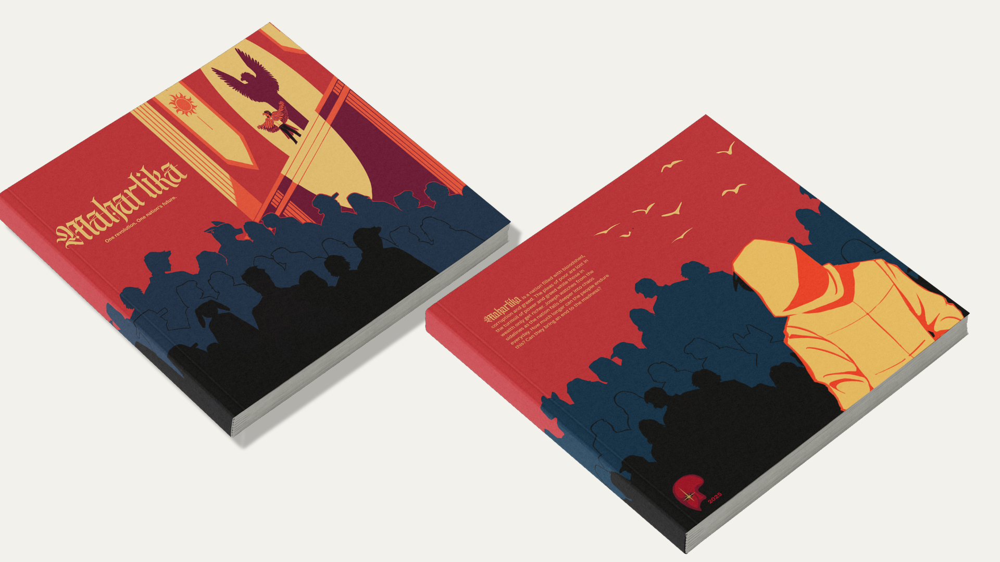

A story set in a dystopian society, Maharlika, is a nation ruined by those in power with the pleas of the poor lost in the turmoil of power and greed. The poor get poorer and the rich only get richer.


Prompt
A Filipino Dystopian story book
Idea
Having a limited color palette allows us to focus on
simple but impactful designs.
It will also allow us to focus on creative story telling,
for example the "good" are usually depicted with a lot of
yellow or brighter colors, with the "bad" mainly
consisting of darks and reds. Even though the rich usually
have animal motifs, you can see that the sheeps main color is yellow,
though your first thought might have been that sheep are usually
white and we have a limited palette so we replaced it with yellow
that is not the case.
Tools used
Procreate and Adobe Photoshop
Reflection
I would want to fix some of the proportions
on the characters and maybe make the silhouettes
more unique, Like for Vera, the lady with the
spider mask, I want to add spider leg motifs
at the bottom of her dress but I couldnt make
it work at the time. But now I have some ideas.